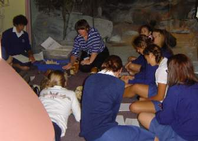
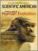
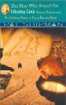
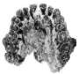

sea
Paleoanthro Weblog
|
My occasional ramblings about paleoanthropology, creationism, and related topics. Mostly in this site I try to be as objective as possible, but here is where I express my opinions. Follow this link if you want to send me feedback. |
Topics: Denisovan and Neandertal genomes, Australopithecus sediba, Dmanisi skeleton, Hobbit on Darwin Day, April Fool again, More fossils from Flores, Blog challenges, Ape to Man, At the Mega Conference, Pygmies on Flores, Creationists and Dmanisi, April National Geographic, April Fool!, An Aboriginal as Neandertal, Latest Hobbit developments, 'Neandertal' hoax, Homo floresiensis on Darwin Day, The Hobbit debate, H. floresiensis a microcephalic?, Ten years old today, Homo floresiensis - the Hobbit, Dembski on Human Origins, again, Adam's Curse, Intelligent Design in 1710, Fossils in the Flesh, Olorgesailie skull, Dembski on Human Origins, Gish review, Australian Museum, Review in Science, Shaved Ape, Lumping, Panda's Thumb, Ceprano skull, Neandertal art, Dmanisi article, McClellan article, Seven Daughters of Eve, Neanderthal Parallax, Scientific American, Kenyan skull, K. platyops, Shanidar, Walking with Cavemen, Unleashing the Storm, Eugene Dubois, Iraqi Museum, OH 65
May 31, 2011: Denisovan and Neandertal genomes
Last year the first draft genome for Neandertal nuclear DNA was published. Genetic sequences for mtDNA and nuclear DNA from a finger bone from Denisova in Siberia were also published, showing that the bone had very ancient mtDNA, but belonged to a sister group of the Neandertals. Fascinatingly, it seems that Neandertals made about a 2.5% genetic contribution to all modern non-African humans, and the Denisovan genes made about a 5% contribution to modern Melanesians. Some posts discussing these finds at the Panda's Thumb:Neanderthal/human interbreeding - the old-earth response
A Full Genome from Denisova, Siberia
Denisovans and the species problem
May 6, 2010: Australopithecus sediba
Last month the discovery of Australopithecus sediba was announced. I'll be updating the site soon to cover that. In the meantime, check out these articles from the Panda's Thumb:Australopithecus sediba and the creationist response
Creationist vs. creationist on Homo habilis
Jan 2, 2009: The Dmanisi Skeleton
In 2007, the discovery of fossilized bones from the body (as opposed to the head) of the Dmanisi hominids was announced. These bones show that the Dmanisi hominids were bipedal, but with some primitive characteristics particularly in the upper body. The bones are definitely not those of apes, but they are not quite like those of modern humans either. At the Panda's Thumb, I have responded to articles about these fossils by Casey Luskin of the Discovery Institute, and Answers In Genesis. These creationist responses are particularly hilarious because they contradict one another: Luskin thinks that the bones are from apes, while AIG thinks they belong to humans. Yet again, creationists confirm that they can't tell the difference between apes and humans even as they assure us that all the fossils are either ape or human.Jun 20, 2007: The Hobbit on Darwin Day
A few months ago I attended a talk by Professor Colin Groves of the Australian National University: 'An update on Homo floresiensis, a.k.a. the "Hobbit"'. As is well known, there has been an unusually bitter scientific debate over the last couple of years as to whether the hobbit is indeed a new species, or just a small microcephalic human. The term 'microcephaly' covers a range of conditions which cause unusually small brain sizes. (Disclaimer: Groves is not a disinterested participant in this debate, having coauthored a paper which argues against the microcephalic interpretation.) Groves went over a long list of unusual features of the hobbit. The limb bone ratios are unlike those of any apes or humans. They are also very robust: in spite of their small size, hobbits would have been remarkably strong. The arms are too long for humans, and they had unusually large feet (like Tolkien's hobbits!). The lower jaw lacks a chin, a feature found in all humans (even people who look chinless), and that is also true of a second jaw which has been found. The upper end of the humerus has a twist not found in modern humans, but which was then found in the Turkana Boy Homo erectus skeleton once it was looked for. Groves' conclusion: all of these features make it overwhelmingly unlikely that the hobbit was just a small microcephalic human. (You can find Groves' talk on YouTube, in seven installments: 1, 2, 3, 4, 5, 6, 7)After the talk, I asked Groves whether the scientific community was coming to any consensus about the hobbit. The reply was unequivocal: although the debate is very heated, the microcephalic interpretation is supported only by a small number of scientists; it is rejected by an overwhelming majority. At a recent conference, Colin was able to talk to a number of prominent paleoanthropologists. All were under no doubt that the hobbit is a new species. And, during one of the talks, when a reference was made to the microcephalic interpretation, a ripple of amusement went through the audience. Creationist Marvin Lubenow, in a new article "Hobbits" were true humans! claims that
In contrast to the discoverers' claim that these fossils represent a new human species, a second theory gaining popularity is that these fossils do not represent a new human species but instead were dwarfs or pigmies possibly suffering from microcephaly, having abnormally small bodies and brains.but this would appear to be wishful thinking. The microcephaly supporters may be making a lot of noise, but not many converts.
By the way, Mike Morwood, one of the discoverers of the hobbit, was present at the talk and I met him very briefly. He had just coauthored a new book, The Discovery of the Hobbit, available in Australia. It has now been published in hardcover in the USA in May 2007 under the title A New Human. A must-read for anyone wanting to know more about one of the hottest paleoanthropological discoveries ever.
April 1, 2006: April Fool!
Lest we forget - the April 1997 issue of Discover magazine had a pretty good April Fool's joke about some Neandertal musical instruments that had supposedly been discovered in Germany. It was an unlikely collection, featuring bagpipes, a tuba, a triangle and a 'xylobone', along with a cave painting of marching musicians. In September 2000 the Institute for Creation Research fell for it and featured Marvin Lubenow presenting this evidence in one of their radio programs. I pointed that out on this website about a month later, and the ICR quickly apologized and retracted the claim. However, no erroneous argument ever completely disappears from creationist literature. I later found the April Fool article cited again in an article by Brad Harrub on the Answers in Genesis website (the citation has now been silently removed). Harrub also thinks that the Java Man skullcap belongs to a gibbon - even though AIG has admitted that this is a discredited argument that creationists shouldn't use any longer (that claim has now been quietly removed too). Harrub's article was also published in AIG's 'peer-reviewed scientific journal', the Technical Journal, which goes to show what a joke creationist peer review is.October 18, 2005: More hobbit fossils from Flores
The latest rounds have been fired in the war over the interpretation of the "Hobbit" fossils from Indonesia that stunned the world in 2004. The hobbit discoverers have published details on some new fossils: more arm bones from the original skeleton, another jaw bone, and many pieces from other individuals. According to them, and some other commentators, the new fossils confirm that the hobbit was a typical member of its population, and not an aberrant individual (in fact, some bones come from an individual smaller than the first hobbit). However they seem less certain now that the hobbit is descended from Homo erectus. The new bones show some similarities to australopithecines; whether this is due to a genealogical relationship or convergent evolution. In short, it's still a big puzzle. John Hawks has a lengthy analysis of the new fossils on his blog at http://johnhawks.net/weblog/fossils/flores/flores_update_oct_2005.html.An earlier paper by Falk et al. argued that the hobbit skull did not seem especially similar to that of microcephalics. A new paper by Weber et al. in Science claims, au contraire, that the hobbit does in fact resemble microcephalic skulls enough that the possibility can't be rejected. Falk et al. remain unimpressed by their claims, however. Ann MacLarnon has also reportedly discovered a microcephalic skull which resembles the hobbit.
September 7, 2005: Blogging challenges
Recently I've been on a couple of blogs, challenging creationists to classify some of the more problematical (for them) specimens from the hominid fossil record. You can check out my posts at the Panda's Thumb, and on Ed Brayton's blog Dispatches from the Culture Wars (about halfway down the page).August 8, 2005: Ape to Man on the History Channel
Ape to Man, the new History Channel documentary, has just aired in the US. Since I don't live there I can't see it, but you can read Paul Myers' review of it at Pharyngula. Myers give it a qualified 'OK'; he disliked some things about it, but it was better than he had feared. See also a review by John Hawks here.July 26, 2005: At the Mega Conference
Jason Rosenhouse, while attending the creationist Mega Conference, went to listen to speaker Phillip Bell talking about Ape Men, Missing Links and the Bible. As he points out, it was the standard creationist boilerplate: Piltdown Man, fully ape or fully human, Lucy, Neanderthal Man, etc. etc. Like all creationists, Bell shied far away from the fossils that would put the lie to the idea that all the hominid fossils are just apes or humans. You'll never see a creationist discuss the skulls around that problematic 700cc area, and try to justify on anatomical grounds why some are apes and some are humans. And you certainly won't see photos of those skulls (like you will on this website); wouldn't want to confuse the faithful, after all! (P.S: you can find Phillip Bell's response here, and Rosenhouse's reply here.)June 3, 2005: Pygmies on Flores
There's an interesting story in Time about some modern inhabitants of the Indonesian island of Flores who are extremely small and live near the Liang Bua cave where Homo floresiensis was found. Interestingly, they seem to think their ancestors lived in the Liang Bua cave. The scientists who think that the hobbit was merely a microcephalic small modern human are of course greatly heartened by this development, but the scientists who discovered the hobbit are standing firm that it is a new species, and presumably find the presence of nearby pygmies merely coincidental. A quote from one of them: "Of course, there are small-bodied people on Flores, but they don't have brains one-third the size of ours, or unusually shaped pelvises or very long arms like H. floresiensis." This controversy doesn't look like ending any time soon.May 19, 2005: Creationists and Dmanisi
I recently got a copy of the new 2nd edition of Marvin Lubenow's book Bones of Contention, a creationist book about the evidence for human evolution. I'll do a fuller review of it later, but there's one thing I want to comment on now. In 2002, the discovery of a new hominid skull from Dmanisi, Georgia, was announced. This skull had a very small brain size of 600 cc, in the Homo habilis range. Two other skulls which had been announced in 2000 had brain sizes of 650 cc and 780 cc. The skulls are about 1.8 million years old and had a mixture of features from H. erectus and H. habilis and although the smallest one seemed slightly more primitive, the discoverers saw no reason not to put them all in the same species.I found these skulls particularly interesting because they nicely straddle the gap that creationists like to claim separates humans from non-human primates. Generally the less-incompetent creationists (i.e. those who don't still think that Java Man and Peking Man are ape or monkey skulls) have a dividing line of about 700 cc; usually anything above that is human, and anything below it isn't. Although there are a couple of fragmentary habilis skulls estimated to be in the 650-700 cc range, there weren't any moderately complete hominid skulls between about 620 and 720 cc, so that became the "gap" separating humans from non-humans. But now we have three skulls from the same place, the same time, and of the same species, sitting smack on top of that gap - above, below, and in it. How, I wondered, would Lubenow handle it?
Well, the answer is interesting. The largest skull (780 cc) is listed on p.350 of BoC in a table of H. erectus fossils (classified by him as human). The smaller two skulls, 600 and 650 cc, are listed on p.352 in a table of H. habilis fossils (generally classified by him as non-human). So as best I can tell, Lubenow considers the largest skull to be human, and the smallest two skulls to be non-human. You'd think this might warrant some anatomical justification, but none is provided. In fact, apart from those two table entries, Dmanisi isn't mentioned in Lubenow's 350 page book which is supposed to be a comprehensive treatment of the evidence for human evolution.
The ICR radio show of November 23, 2002 on which Lubenow appeared was similarly evasive. There was a suggestion that the Dmanisi skulls might be a "misunderstanding", with no justification, but in the end ICR and Lubenow didn't give a verdict on the skulls. Answers in Genesis usually issues a response to new hominid fossils announced in the media, but they too have treated the Dmanisi skulls as if they don't exist. In fact, I'm not aware of any creationist who has tackled them squarely. I wonder why that might be?
April 25, 2005: National Geographic
The April National Geographic is definitely worth getting if you're interested in hominids. There's an article on the hobbits, Homo floresiensis, and another article about the Dmanisi hominids from Georgia; in particular, a new skull has been discovered there. The new skull is of interest because it is almost entirely toothless, suggesting that the individual must have received considerable support from his companions. This skull was also published on this month (Lordkipanidze et al. 2005, Nature, 434:717).April 1, 2005: April Fool!
The April 1997 issue of Discover magazine had a pretty good April Fool's joke about some Neandertal musical instruments that had supposedly been discovered in Germany. It was an unlikely collection, featuring bagpipes, a tuba, a triangle and a 'xylobone', along with a cave painting of marching musicians. In September 2000 the Institute for Creation Research fell for it and featured Marvin Lubenow presenting this evidence in one of their radio programs. I pointed that out on this website about a month later, and the ICR quickly apologized and retracted the claim. However, no erroneous argument ever completely disappears from creationist literature. I've recently noticed the April Fool article cited again in an article by Brad Harrub on the Answers in Genesis website (update: the citation has now been removed). Harrub also thinks that the Java Man skullcap belongs to a gibbon - even though AIG has admitted that this is a discredited argument that creationists shouldn't use any longer (2nd update: now that claim has been quietly removed too). Harrub's article was also published in AIG's 'peer-reviewed scientific journal', the Technical Journal. What is AIG's peer-review process like, if clangers like these can get through it?March 27, 2005: An Aboriginal as Neandertal
Today's copy of The Australian newspaper contains an article (not online) about two Australian Aboriginal boys who are auditioning for the role of a Neandertal boy in a German film. A number of people, including me, find this somewhat unsettling. As paleoanthropologist Colin Groves is quoted as saying, "I've never seen anybody look less like neanderthal man than these two kids". It's hard to avoid the impression that the film-makers think an Aboriginal actor will be more readily accepted as primitive. Even if true, this hardly strikes me as a stereotype we should be reinforcing. The actor playing the part will wear a rubber mask, so it's only their skin color that will show their aboriginal status. If the face is hidden, why choose an aboriginal actor? (Especially since there are widespread suspicions that Neandertals may have been fair-skinned.) On the other hand, both boys are enthusiastic about playing the role, and one can only be happy for them personally for getting the opportunity to star in a movie.March 7, 2005: Latest Hobbit developments
There's a new article on Science Express by Falk and colleagues about the brain of Homo floresiensis, and an excellent commentary on it at Carl Zimmer's blog, The Loom. There's an article in the Canberra Times (March 2) which sheds some light on the personal differences underlying the scientific debate about Homo floresiensis, which centres on whether the Hobbit really is a new species, or a Homo sapiens with microcephaly. A debate on the Australian current affairs program Lateline screened on March 3rd; you can read the transcripts here and here (see also another Lateline segment from March 4 ). There was also a segment on 60 Minutes on Feb 27th, which interviewed scientists from the opposing camps; you can read the transcript of that here.In summary, the Science Express article compared the hobbit brain to those of many other hominids, including a microcephalic. It concluded that the hobbit brain was different from everything else, though it most closely resembled Homo erectus, and had many differences from both normal humans and the microcephalic. The frontal lobe of the hobbit brain, responsible for intelligent behaviour, appears particularly well developed. The researchers believe their results greatly strengthen the interpretation that the hobbit is a new species. On Lateline however, Henneberg defended the microcephaly interpretation by saying that the microcephalic skull studied by Falk et al. is a different sort of microcephalic to the one he was comparing it with. The claimed hobbit/microcephalic similarity has not yet been demonstrated, however. Further research will doubtless focus on resolving this issue.
And, the hobbit was also in the papers last week because Teuku Jacob, the Indonesian scientist who had 'borrowed' the remains and then held on to them for considerably longer than originally agreed, finally handed them back to the finders.
Update, March 31: Having now read the Falk et al. paper and its supplementary material, I find Henneberg's contention even more unconvincing than before. Although they only had one microcephalic skull, Falk et al. are well aware of the different forms of microcephaly that can occur and saw no reason to believe that any of them were applicable to LB1:
Microcephalia vera (MV, primary or true microcephaly) is an autosomal recessive pattern associated with eight loci and three known genes. MV is characterized by small cranial vaults relative to facial skeletons, sloping foreheads and pointed vertices (S3-S4). The virtual endocast that we produced from a cast of an MV skull reflects the pathological shape of the skull. Microcephaly with simplified gyral pattern (MSG) is another form of congenital microcephaly, with five recognized types manifesting reduced numbers and shallowness of cortical sulci (S5). The cortical topography of LB1's endocast precludes it from this form of microcephaly. Secondary microcephaly is a catch-all diagnosis for individuals with occipitofrontal circumferences below -2 standard deviations for age and sex (S3), and is not necessarily associated with a pointed head (if it were, it would automatically be ruled out for LB1). Unlike MV, secondary microcephaly may be attributed to various causes including toxic intrauterine exposure, chromosomal anomalies, or infectious diseases (S3). Since LB1 lacks the diagnostic head shape associated with MV and lacks the gyral morphology associated with MSG, its interpretation as a microcephalic can only be made by claiming that it is a secondary microcephalic (S6). This amounts to saying LB1 is small-headed (literally microcephalic) because it is smallheaded, which does not lend itself to hypothesis testing. (Falk et al. 2005, supplementary material)
This doesn't mean Falk et al. couldn't be wrong of course, but for the moment they seem to have done the best job of supporting their case, and the onus is now on Henneberg to come up with some counterevidence.
February 28, 2005: The 'Neandertal' Hoax
It has recently been reported (Telegraph, Guardian) that German scientist Reiner Protsch had committed a number of scientific frauds. Protsch apparently could not even operate his own carbon-dating equipment, and routinely made up dates for bones that had been sent to him for dating, often giving recent specimens dates that were much too old. Many webpages have repeated the following quote about the significance of these frauds:Chris Stringer, a Stone Age specialist and head of human origins at London's Natural History Museum, said: "What was considered a major piece of evidence showing that the Neanderthals once lived in northern Europe has fallen by the wayside. We are having to rewrite prehistory."
Stringer, however, says that he never said that:
This is a made-up quote as I never placed great weight on the significance of the Hahnofersand find in the first place. It was never called a Neanderthal as far as I know, but certain people saw "mixed" features in its morphology. Its removal is certainly not rewriting anything I have ever said about the Neanderthals, let alone rewriting prehistory! (Chris Stringer, personal communication)
That sounds right to me. I have never even heard of any of the fossils that Protsch misdated - they are all obscure and of no importance to the big picture of human evolution. Judging from news reports, it seems as though all of the fossils involved are modern humans, even though many websites refer to Neandertals in their article titles. The earliest article I can find using this quote comes from the Telegraph. Stringer had this to say about that article:
I never saw this published piece so was unaware of the source of the false quote. I remember talking to the reporter concerned, and from what I remember the words in question were what he said to me, with him asking whether I agreed with the statement. I told him that the "fossil" was never regarded as a Neanderthal and was briefly important in the 1980s to people like Gunter Brauer who were arguing for gene flow between Neanderthals and modern humans. However, as anyone who is familiar with the palaeoanthropological literature over the last 20 years would know, the find has been of negligible significance to recent debate. It has to be said that this is also a reflection of Dr Protsch's low reputation in the field, as anyone familiar with the recent literature would also know. (Chris Stringer, personal communication)So, it's all a storm in a teacup. The media exaggerated the significance of these frauds, with phrases like "History of modern man unravels" and "key discoveries" occurring in headlines.The frauds are doubtless a blow for the researchers unlucky enough to have sent samples to Protsch for dating, but do nothing to weaken the evidence for human evolution (despite the occasional creationist claiming otherwise).
February 16, 2005: Homo floresiensis on Darwin Day
For Darwin Day (Feb 12th), the Canberra Skeptics arranged a talk by paleoanthropologist Colin Groves at the National Museum of Australia on the subject of Homo floresiensis, the "Hobbit". It's clearly a popular subject; the small lecture theatre was filled to capacity with a few hundred people.Some scientists have disputed the idea that floresiensis is a new species, suggesting instead that the skeleton is a pathological modern human - Maciej Henneberg, for one, has claimed that it closely resembles a 4000-year-old microcephalic skull found on Crete. Groves showed pictures of that skull and compared it to the hobbit. They did not look very similar to my unqualified judgement, nor, apparently, to the judgement of many qualified scientists. The hobbit femur also has differences from that of any other hominid, and the pelvis flares more than in H. sapiens or H. erectus.
Groves brought to my attention an article in the journal Before Farming where a number of scientists gave their initial reactions to H. floresiensis, and Brown and Morwood, two of the discoverers of floresiensis, responded. In response to Henneberg and Thornes claim about microcephaly, Brown and Morwood disagreed very strenuously: "This is an extremely poorly informed, and ill designed, piece of 'research' and could not have been published in a substantial peer reviewed journal. The authors have either not read the article upon which they are commenting, or have a very limited knowledge of hominin evolutionary anatomy, perhaps both." (Ouch! The dispute will doubtless be carried over to the peer-reviewed literature soon)
The original paper on H. floresiensis speculated that the arms of the skeleton might be in still-unexcavated sediments, and they apparently were indeed uncovered in the next digging season last year. The original finds included part of a radius (arm bone), which the discoverers claimed was consistent with the 1 meter height of the hobbit skeleton, while Henneberg claimed it was consistent with a height of about 1.5 meters. A radius from the new arm bones (which belong to the previously discovered skeleton) reportedly matches the length of the original radius, strengthening the conclusion that the skeleton is a normal member of its population and not an atypical freak. Groves, incidentally, is not entirely sold on the idea that the hobbit is a dwarf form of Homo erectus. Although geographically H. erectus would seem the most likely ancestor, some anatomical features suggest to him a possible relationship with Homo habilis.
January 23, 2005: The Hobbit debate
The Guardian newspaper from Britain has an interesting article about the scientific debate surrounding Homo floresiensis, a.k.a. the Hobbit. There are some modern Indonesians living on Flores who are extremely short, not much more than 4 feet tall (122 cm). This is quite close to the Hobbit skeleton's height of 1 metre. If, as its discoverers believe, the Hobbit is descended from Homo erectus, this closeness in height is only coincidental. If, as some dissenters interviewed in the article claim, the skeleton is only an unusual Homo sapiens, it might not be coincidental: the Hobbit could conceivably be ancestral to some modern Indonesians. Anthropologist John Hawks has a new blog entry about H. floresiensis, as does science journalist Carl Zimmer, who links to an essay by Teuku Jacob , an Indonesian paleoanthropologist at the center of the dispute. Finally, there's a reportedly excellent article on floresiensis by Kate Wong coming out in the February issue of Scientific American.December 10, 2004: H. floresiensis a microcephalic?
Anatomist Maciej Henneberg has claimed that the 'Hobbit' skull is extremely similar to that of a microcephalic specimen from Crete (microcephaly is a medical condition which results in small brain sizes). I suspect Henneberg, though a respected anatomist, will turn out to be wrong for a number of reasons. One is that Brown and his colleagues are also respected anatomists, and they have had access to the fossil and many months in which to study it. Brown considered the possibility of microcephaly even before Henneberg raised it, and rejected it:It's more difficult to rule out, I suppose, the analogy with abnormal modern humans, like pituitary dwarfs or microcephalic dwarfs, because there you can have small-bodied people who have small brain sizes as well. Very few of these people actually reach adulthood and they have a range of distinctive features, depending upon which particular syndrome they have, throughout the cranial vault and rest of the skeleton. None of these features are found in Liang Bua. It has a suite of clearly archaic traits which are replicated in a variety of early hominids and these archaic traits are not found in any abnormal humans which have ever been recorded. We now have the remains of 5 or 6 other individuals from the site, so it's not just one. There's a population of these things now and they all share the same features. (Peter Brown, in an interview with Scientific American)
Second, microcephaly is a rare condition - the probability of finding a fossil which happened to have microcephaly would be very low. If other specimens similar to LB1 in the skull turn up, we can effectively rule out microcephaly as an explanation. Thirdly, Brown's article on floresiensis passed an extensive peer review from 12 other experts before publication. That doesn't prove it's right, but it does give it considerable credibility.
In other news about H. floresiensis, Indonesia's most prominent paleoanthropologist Teuku Jacob has stirred up controversy by taking the fossils from the center where they were stored to his own laboratory for study. Jacob had also been previously reported in newspapers as being skeptical that the Hobbit was a new species; he believed that it was a member of the "Australomelanesid race", and only 1,300 to 1,800 years old.
And, there was an article in the Dec 5th Sydney Morning Herald (http://smh.com.au/articles/2004/12/05/1102182161157.html; registration may be required) about some Indonesian villagers who allegedly captured a tiny woman three weeks ago! Sadly she escaped, so we can't determine if she's a living H. floresiensis. I wouldn't bet on it, though.
November 11, 2004: Ten years old today!
Guess what? This website is 10 years old today. I started this project in 1994 because the talk.origins archive had no material on human evolution, even though it's a topic of crucial interest to the creation/evolution debate. The first version of this site was not a web page, but a 53K text file available by ftp from the talk.origins archive, which at the time was an ftp site rather than a website. (ftp stands for File Transfer Protocol, and was a common way of getting files to and from other computers before the web took off). Originally it was just a list of descriptions of species and fossils and a brief rebuttal of some creationist arguments. I converted it into a web page in November 95 and added the first illustrations. The page had grown to 151K by April 96, and in October 96, it was split into multiple web pages. The site has been steadily growing since 1994. At the moment, it consists of 170 web pages totalling about 1.8M in size (a number of them by other contributors), along with about 230 image files. The home page gets about 400 hits per day. This site is now one of the top resources on human evolution on the web, and (I think) the best source of information about creationist arguments on human evolution on or off the web. I've enjoyed creating the site and plan to keep doing it for a while yet. I hope you've enjoyed reading it!October 28, 2004: Homo floresiensis - the Hobbit
One of the most astonishing fossils ever found: scientists have announced the discovery of a new species of dwarf human, Homo floresiensis, on the Indonesian island of Flores. Bones have been discovered from about 7 individuals, including an almost complete skull and partial skeleton. They show that these people were only about 1 meter (3ft) tall as adults, with an astonishingly small brain size of 380cc. Compare this with the average modern human brain size of 1350-1400cc; 380cc is about average for a chimp. It is thought that this is a dwarf form that evolved from Homo erectus; it is not uncommon for dwarf species of large mammals to evolve on islands. Even more surprising, these critters made stone tools and used fire. H. floresiensis was at the site by 38,000 years ago and remained there until at least 18,000 years ago. Anecdotal evidence from Indonesia raises the fascinating possibility that they could have survived on Flores up until about 500 years ago, when the Dutch first arrived there. Some good links:- Nature special on Flores Man
- Mini Human Species Unearthed, by Scientific American
- "Hobbit" Discovered: Tiny Human Ancestor Found in Asia, by National Geographic
- Carl Zimmer's commentary on The Loom
- Paul Myers' commentary on Pharyngula
- John Hawks' weblog commentary
Flores was also in the news in 1998, when Mike Morwood (who is also involved with this new find) announced the discovery of archaeological evidence of Homo on the island 840,000 years ago. Because Flores is thought to have always been separated from Java by a deep sea passage, this indicated a hitherto-unsuspected ability of H. erectus to cross sea barriers.
This is one of the most important hominid fossil finds ever. For sheer mind-boggling unexpectedness, nothing beats it. Expect Flores to become a very hot spot in human evolution studies in the next few years! (Even more fun will be watching creationists trying to explain it away...)
October 11, 2004: Dembski on human origins, again
William Dembski of the Discovery Institute has just updated his article on human origins. And, as before, Ian Musgrave has critiqued the article at the Panda's Thumb, Dembski on Human Origins, reprise. The changes are fairly minimal, and don't correct most of the problems that have been pointed out.September 25, 2004: Adam's Curse
I've just read Bryan Sykes' book Adam's Curse about the Y-chromosome responsible for maleness in mammals. It's a sister - or brother, rather - book to his work about mitochondrial DNA (a.k.a. mtDNA), The Seven Daughters of Eve. Y chromosomes are inherited through our paternal lineages, mtDNA through our maternal lineages. The book is a fascinating journey through the biology of the Y chromosome and sex determination. Among other things, Sykes tracks down the Y chromosomes of Genghis Khan and the Scottish chieftain Somerled, both of whose Y chromosomes have had astonishingly successful careers and are now carried by millions of men worldwide. When I read Richard Dawkins' book The Selfish Gene many years ago, I never did understand what Dawkins was getting at - after all, if an individual reproduces so do his/her genes, and vice versa, so it seemed to be an irrelevant distinction whether genes or individuals were the unit of selection. Adam's Curse made it clear why; different parts of our genome have different priorities and strategies for getting reproduced (for example, Sykes tells of Y chromosomes and mtDNA genomes which seem able to preferentially reproduce themselves by only causing sons or daughters to be born). Towards the end of the book, Sykes gets into some rather alarming speculations, suggesting that degeneration of the Y chromosome is approaching a critical point that could lead to the extinction of males, then females, within about 100,000 years. This is not, obviously, something that needs to be worried about just yet, but it's a short period of time compared to the tens of millions of years that our mammallian lineage stretches back for. Why should it be happening now? Maybe there's a flaw in Sykes' reasoning, though it's not obvious to me what it could be. A number of Amazon reviewers chided Sykes for his speculations, but I had no problem with it. I recommend this book because I think most readers will, as I did, find it thought-provoking and learn a lot of fascinating stuff from it.As a related aside, Carl Zimmer's blog The Loom recently discussed a new paper which, by analyzing both the Y chromosomes and mtDNA from the same individuals, gives convincing evidence that throughout human history polygyny (two or more women having children by the same man), rather than monogamy, has been the norm.
Update: Biologist H. Allen Orr has a review of Adam's Curse in the New York Review of Books, where he squelches the idea that we need to worry about males becoming extinct due to Y-chromosome degeneration.
August 31, 2004: A new (but old) Intelligent Design paper
I recently became one of the members of the Panda's Thumb blogging crew, and I've just created my first entry to the blog. It's an item about an intelligent design paper that dates back to the year 1710. And it's just as good as the intelligent design arguments being made today!July 31, 2004: Fossils in the Flesh
Here's an interesting article on how sculptors go about the tricky job of creating reconstructions of extinct hominids: Fossils in the Flesh, by Scott LaFee of the San Diego Union Tribune (June 23, 2004). It's a complex multi-step process, part art and part science, and each phase of the project has different levels of uncertainty.July 13, 2004: Olorgesailie skull OL 45500
The July 2nd issue of the journal Science had a couple of articles about fragments of a new H. erectus skull discovered at Olorgesailie in Kenya. The skull, OL 45500, is from the poorly-known 0.5-1.0 Myr period, and is also small for erectus, probably under 800 cc. I'm not sure why these fragments were particularly newsworthy however, as I don't see that they tell us anything about erectus that we didn't already know. There's already an erectus skull, OH 12, which is about the same age and size as OL 45500. There's another similar skull discovered by Meave Leakey's which was announced at a conference in 2003, but has not yet been published. And, of course, there are the Dmanisi skulls from Georgia, which are even smaller than OL 45500.June 30, 2004: Dembski on Human Origins
William Dembski, the leading intellectual light of the Intelligent Design movement, has just published an article on human evolution on the web, Reflections on Human Origins. According to the abstract: "This paper reviews the main lines of evidence used to confirm such a materialist view of human evolution and finds them inadequate." One might think that the main evidence is the fossil evidence, but Dembski handwaves that away in little more than a page. Dembski even admits that the fossils show a sequence of species which become more and more different from modern humans the further back in time we go. One might think that this is pretty convincing, but no, according to Dembski "this reasoning is based on the assumption that humans evolved in the first place". Uhh? All right, let's not assume evolution. How else does one explain such a pattern? If Intelligent Design can make any sense of it, Dembski certainly isn't letting on.Far more time is spent responding to the idea that the close genetic similarity between humans and chimps shows they are related. Dembski's most amazing claim is that the 98.4% similarity claim is misleading because "when molecular biologists line up human and chimpanzee DNA, they are matching arbitrarily chosen segments of DNA" (his italics). No reference is given for this, and according to my understanding it is absolutely wrong [P.S.: and, in fact, it has silently vanished from the revised version of Dembski's paper]. Dembski also points out, correctly, that humans have 23 pairs of chromosomes compared to 24 for chimps. That may sound like a major difference, but it's illusory: it turns out that one of the human chromosomes corresponds to two chimp ones, and there's excellent evidence that at some point in our evolutionary history that chromosome was formed by fusion of the two corresponding chimp chromosomes. And Dembski doesn't even mention the shared genetic errors that are found in both the human and chimp genomes.
The rest of Dembski's paper is an extended 'argument from ignorance', as Dembski concludes that the abilities of the human brain could not possibly have arisen without intelligent direction:
Nevertheless, [design theorists] have reached a consensus about the indispensability of intelligence in human origins. In particular, they argue that an evolutionary process unguided by intelligence cannot adequately account for the remarkable intellectual gifts of a William James Sidis or the remarkable moral goodness of a Mother Teresa.Let's apply this intelligent design analysis to, say, the remarkable ability of seals to balance balls upon their noses. This is hardly a useful ability in the wild, but evolutionists could hypothesize that the ability is a byproduct of other attributes of seals which are useful to them and were naturally selected for. (Some scientists have similarly hypothesized that the versatility of human intelligence might be a byproduct of selection on the human brain to perform other tasks, one of three hypotheses rejected by Dembski). An intelligent design analysis might instead argue that the ability to juggle balls on noses must have been implanted by an intelligent designer. From this, we can now infer that said intelligent designer wants us to be entertained by seals in zoos and aquaria, and hence that all those animal-rights activists who oppose using animals for entertainment must be wrong. Who says that intelligent design theory doesn't have any useful application!
Well, that's silly reasoning, though no sillier than Dembski's. Dembski doesn't find any proposed evolutionary hypotheses for human intelligence convincing. I don't agree, but even if I did, there's always the possibility that both of us are overlooking another hypothesis. There's no analysis by Dembski to show that other hypotheses couldn't possibly work; he merely falls back on an intelligent design explanation by default. In other words: argument from ignorance.
See also an article by Ian Musgrave on Dembski's original article at The Panda's Thumb, and another on the revised paper, Dembski on Human Origins, reprise.
June 23, 2004: A review of "Evolution: The Fossils Still Say No!"
For your enjoyment, here's a biting commentary on Duane Gish's book "Evolution: The Fossils Still Say No!" at amazon.com:Even my 8th grade science class found a bunch of mistakes!, January 15, 2004That pretty much says it all.
Reviewer: A reader from Freddie G., Washington, DC USA
Last year in my 8th grade science class my teacher challenged the whole class to read and research the facts in this book to see if we could find any mistakes. We really didn't want to do it because it seemed like a lot of work but after he pointed out a couple mistakes at the start of the book it seemed like it might be a fun way to show an adult that us kids could do a better job. The class decided to break up the book into teams and we did our research and found lots of errors that were easy to find. Even our school library, which my mother always complains about being bad, had a few books and science journals that had the right information in it. At the end of the year we all got an A+ for the project and were all given a special prize in the auditorium by our principal and the man who is in charge of the science area at our college. I was surprised at how many people thought this was a good book. It was full of lots of errors and mistakes and old information that was pretty easy to correct.My teacher asked us what we had learned and we decided that we wouldn't believe things we read until we check the facts. People should really do that more often.

May 22, 2004: Australian Museum
Yesterday I visited the Australian Museum in Sydney, mainly to see their Tracks through Time exhibit on human evolution. It's a large and mostly up-to-date exhibit with lots of good material in it, including a large diorama of an A. afarensis family. Hello to the class from Port Hacking High School who were there on an excursion! Students were busily handling casts of skulls, comparing brain sizes, dentitions and facial angles, and using the exhibit material to research the questions in their activity sheets. Even better, they seemed to be finding it interesting. It's hard to imagine a better antidote to creationism.May 7, 2004: Review in Science
This website received a glowing review from the NetWatch column in the April 30th issue of Science, probably the world's 2nd-most influential scientific journal. You can read the Science column in either HTML or PDF format (the pdf looks much better).April 29, 2004: The Shaved Ape strikes back
The Washington Dispatch website has a new article, Praying at the Alter (sic) of the Shaved Ape, which makes some real howlers about human evolution - obviously copied straight from creationist literature. I've written a short response, which is entry no. 4 by 'habilis' on this page. (links are now obsolete)April 21, 2004: Lumping species
An interesting new paper by Katerina Harvati and colleagues in the Proceedings of the National Academy of Sciences (Feb 2004, 101:1147) compares the amount of difference between Neandertals and modern humans with the amount of difference typically found between different primate species. Their results strongly supported the conclusion that Neandertals should be considered a different species from modern humans. This reminds me of an influential paper published by Ian Tattersall in the Journal of Human Evolution in 1986 (JHE 15:165-175). Tattersall pointed out that closely related species in the primates generally differ in only a few characteristics, and sometimes none which would be detectable in the fossil record. In the hominids, by contrast, fossils are routinely lumped into the same species even when they contain far greater differences than are normally found between closely related primate species. For example, modern Homo sapiens is already a highly variable species, but often has specimens such as Kabwe, Arago and Petralona lumped into it even though they are well outside the range of modern H. sapiens. Sometimes these are classified as 'archaic' H. sapiens, a tactic not used with any other species. Tattersall argued persuasively that in any group other than the hominids, these differences would automatically result in the naming of new species, and that we should not treat humans differently. The Harvati et al. paper supports Tattersall's argument that we should be recognizing more species in the hominid fossil record.March 31, 2004: Panda's Thumb
For those interested in evolution, creationism and the 'intelligent design' controversy, there's a new blog which is essential reading. The Panda's Thumb is a group blog, whose participants include many scientists who are active in the fight against creationism. This blog only started a couple of weeks ago, but it already contains many excellent articles.February 21, 2004: Ceprano skull
The Ceprano skull from Italy is considered between 700,000 and 900,000 years old, and is often attributed to H. erectus. Mallegni et al. (C. R. Palevol 2, 153-159) have used the Ceprano skull as the type specimen for a newly-named species, Homo cepranensis. However, I think that H. cepranensis will struggle to be generally accepted as a valid species, and at least one article has already appeared disputing its validity. (Gilbert et al., JHE 45:255-259, 2003)December 27, 2003: Neandertal art
A recently-found rock was apparently modified by Neandertals to resemble a face. It doesn't look all that impressive, but the evidence seems strong that it was intentionally modified, and is not just an odd-shaped rock. This makes it important evidence for artistic behaviour in Neandertals. (See Neanderthal 'face' found in Loire, from the BBC)October 27, 2003: New Dmanisi article
The November issue of Scientific American contains a short article about the Dmanisi hominids called Stranger in a New Land, by Kate Wong. Follow this link for a page on this site about these fossils, which have an intruiging mixture of Homo erectus and Homo habilis features.October 23, 2003: McClellan article
Bill McClennan wrote an amusing article yesterday for the St. Louis Post-Dispatch, touching on paleoanthropology, human evolution, and creationism: Men, women, Iraq, creationism and all that heavy stuffSeptember 21, 2003: The Seven Daughters of Eve
Mitochondrial DNA (mtDNA) has become very relevant to paleoanthropology since the first Neandertal mtDNA sequence was discovered in 1997. Bryan Sykes' book The Seven Daughters of Eve is an excellent book for popular audiences which explains the science behind mtDNA and why it is so useful for investigating population histories. It also provides a good look at the way science is conducted, the conflicts and rivalries that occur, and contains diversions into fascinating topics such as the Iceman, golden hamsters, and the disappearance of the Russian royal family including Princess Anastasia. The book is somewhat Eurocentric, since most of Sykes' data (and the 'seven daughters') come from Europe, but a section at the back of the book discusses some of what is known about the worldwide distributions of mtDNA sequences.September 4, 2003: The Neanderthal Parallax trilogy
Hominids, the first book in Robert Sawyer's Neanderthal Parallax trilogy, has just won the Hugo Award for best science-fiction novel of the year. The books involve contact with a parallel earth in which only Neandertals survived to the present day, and have developed a civilisation with considerable differences from our own. The second book in the series is Humans, and the third, Hybrids, is to be published in September 2003.August 22, 2003: Scientific American special edition

Scientific American has released a new special edition issue devoted to paleoanthropology: New Look at Human Evolution. It contains a number of updated reprints of article about human evolution that have appeared in Scientific American over the last decade or so. The articles cover topics such as the Out of Africa and Multiregional models of human evolution, recent fossil discoveries such as Sahelanthropus and Orrorin, neandertals, mtDNA, cannibalism, and the evolution of bipedality and skin color.
August 9, 2003: A new Kenyan skull
Three fossil skulls discovered at Dmanisi in Georgia, in the ex-USSR, between 1999 and 2001 were a big surprise to the paleoanthropological community. Not only were they the oldest and most primitive hominid skulls ever found outside of Africa, in both brain size and anatomy they seemed intermediate between Homo habilis and Homo erectus fossils, and their finders classified them as a new species, Homo georgicus.Now a similar skull has apparently been found in Africa by Meave Leakey's team. This new skull, 1.55 million years old, was found in Kenya in 2000, and announced at the April 2003 meeting of the American Association of Physical Anthropologists. (Science, 300:893, 9 May 2003) The same report also noted that many of the scientists at the meeting were skeptical of the validity of Homo georgicus as a separate species. H. erectus expert Philip Rightmire is quoted as believing that the Dmanisi skulls are erectus. Finally, a fourth and more robust skull, along with some skeletal bones, has been discovered at Dmanisi.
July 28, 2003: Kenyanthropus platyops
Tim White argues in a recent paper (Early hominids - diversity or distortion? Science 299:1994, March 28 2003) that maybe too many new fossil hominid species are being named. He lists 4 recently-named species as examples. Curiously, two of these are ones for which he was a coauthor. However, he takes particular aim at Kenyanthropus platyops, named in 2001 from a fossil skull found by Meave Leakey's team. White argues that it is so severely distorted that it cannot be confidently identified, and may just be a Kenyan variant of Australopithecus afarensis. White is, by all accounts, both widely recognized as a superb anatomist and feared for the sharpness of both his pen and his tongue. To see why, read this paper (A view on the science: Physical anthropology at the millennium, American Journal of Physical Anthropology 2000), which contains scathing verdicts on many claims from other scientists.July 22, 2003: The Shanidar Neandertals
Good news: the Shanidar Neandertal fossils from the Iraqi National Museum have been discovered safe and sound. See below for more details.June 17, 2003: Walking with Cavemen
The new BBC series Walking with Cavemen is now being shown in the U.S. and Australia. Unlike the Walking with Dinosaurs and Walking with Beasts series which used computer-generated animals, Cavemen uses humans in makeup and costumes to represent other hominids. It's well done, though hominids just don't have the 'oomph' of dinosaurs.The BBC copped quite a bit of flak with Dinosaurs for presenting speculation as fact, and therefore tried to do better with Cavemen. However, the first episode presents at some length the idea that the origin of bipedalism is due to its increased energy efficiency. This is presented as if it is a virtual certainty, but in fact the origin of bipedalism is a controversial topic, with lots of different hypotheses floating around and no clear concensus. And in the second episode, it's claimed that H. habilis is a human ancestor, and implied that H. rudolfensis died off. That's a common opinion, but not something we can be certain about. It's a matter of preference, but I'd have preferred a show which gave more explanation of the evidence behind the speculations, and didn't gloss over the uncertainties.
Stop press: as expected, Answers in Genesis has promptly issued a response, Walking with Cavemen - fact or fiction?. They naturally emphasize the amount of speculation that the series engages in. It's the fossil evidence they should be more concerned about however, because the evidence is big, big, trouble for creationism.
May 31, 2003: Unleashing the Storm
In January 2003, Answers in Genesis (AIG) web-published Unleashing the Storm, a highly critical review of Unlocking the Mysteries of Creation, a new creationist book by Dennis Petersen. AIG rightly slams Petersen on many counts: sloppy reasoning, ignorance of the theory of evolution, irrelevant material, and the credulous use of many hoary creationist arguments which have long been discredited, even by many creationists. Examples include the moon dust argument, the shrinking sun, the Archaeopteryx fraud claim, the 'Japanese plesiosaur', the Paluxy River tracks, etc. Many of these arguments are listed on an AIG web page, Arguments we think creationists should NOT use.What I find amusing, however, is that Petersen's level of incompetence is reminiscent of just about all the creationist literature I ever read dating from the 1970s and 1980s, including material from AIG (then the Creation Science Foundation) and the Institute for Creation Research (ICR). Back then, it seems, it was hard to find a creationist who *didn't* use the shrinking sun, plesiosaur, or moon dust arguments. Brian Baxter, in an article in Autumn 2003 issue of the skeptic (the magazine of the Australian Skeptics) makes a similar point, showing that many of the arguments now being abandoned by AIG were used enthusiastically by them back in the early 1980s. AIG explains this turnaround by saying that:
All theories of science are fallible, and new data often overturn previously held theories. Evolutionists continually revise their theories because of new data, so it should not be surprising or distressing that some creationist scientific theories need to be revised too.but, in fact, most of these popular creationist arguments were incompetent from the day they were first made, and anticreationists were soon rebutting them, by doing the basic research that creationists had failed to do. It took a couple of decades of creationists being bludgeoned with the evidence of their incompetence before AIG obviously decided that they had to make a serious attempt to try and stamp out some of the more embarrassing creationist bloopers (for which they do deserve some credit). AIG has clearly had enough of having their fingers burnt by dodgy creationist arguments (see The Monkey Quote for a spectacular example). Nowadays one can see that they are making a effort to improve their game - gone are the days of obvious misquotations and misrepresentations, basic scientific errors, uncritical acceptance of claims from other creationists, failure to check original sources, etc. In a big slam at the old ICR-style of creationism, AIG even says, in a letter quoted in their Unleashing the Storm article:
I strongly recommend, if considering such a major rewrite, becoming really familiar in detail with all of the modern creationist literature, not just the old ICR stuff (however much we all cherish their pioneering efforts) recycled.Take that, ICR! AIG clearly considers itself the new leader of the creationist movement, and they are right. Under the leadership of John Morris (son of ICR founder Henry Morris who was responsible for much of "the old ICR stuff") ICR has become increasingly stagnant while AIG has leapt ahead of it in visibility and clout.
May 12, 2003: Eugene Dubois

I've just read a new (well, 2001) biography of Eugene Dubois, the discoverer of Java Man, by the excellent science writer Pat Shipman. Shipman had unprecedented access to the Dubois archives and other material, so her book, The Man who Found the Missing Link, is surely the most detailed treatment of Dubois yet written. My only complaint would be that Shipman has used artistic licence to fill in many details of Dubois' life, and one is never quite sure where the boundary lies between documentable truth and fiction. Notwithstanding that, I thoroughly recommend the book. It illuminated the magnitude of Dubois' achievement, and his (often unattractive) personality, better than anything else I have ever read.April 18, 2003: The Shanidar Neandertals at the Iraqi Museum
June 12: Based on widespread news reports, I had previously mourned the loss of virtually the entire collection of the Iraqi National Museum, which contained one of the world's greatest collections of material from the earliest civilizations. It now appears that much of the museum's collection has survived (see articles from The Washington Post, June 8, June 9, June 11). Irked though I am at having been mistaken, this is far outweighed by my pleasure at knowing that this priceless collection has been preserved.June 21: More news from the Washington Post: the estimate of losses is increasing again, to over 6000.
July 12: I initially wrote this item because the Shanidar Neandertal specimens came from the Iraqi Museum. The July 2003 issue of National Geographic lists the Shanidar fossils among a list of the more important items from the Baghdad museum which are unaccounted for. However, an update page on their website says that the Shanidar specimens have since been found to be safely preserved.
March 28, 2003: OH 65

The latest fossil from Olduvai Gorge, OH 65, is a fossil upper jaw with part of the lower face. It was discovered in 1995, but was not made public until 2003 (Blumenschine et al. 2003, Science 299:1217-21 with a commentary by Phillip Tobias in the same issue). Based on its similarities with both OH 7 (the type specimen of H. habilis) and ER 1470, Blumenschine and his colleagues suggest that 1470 is therefore a member of habilis, making rudolfensis an invalid species.Naturally, nothing is ever that simple in paleoanthropology. Another scientist I spoke to thought that OH 65 differed from both OH 7 and another couple of fossils that may be rudolfensis jaws. Anatomist Bernard Wood, a major proponent of rudolfensis in the last decade, is another scientist unlikely to accept the demise of that species. So the conclusion of Blumenschine and his colleagues will certainly not go unchallenged.
Tobias' commentary article notes that the number of hominid species and even genera has taken off in recent years. I had noticed the same phenomenon myself: since 1994, we have seen the naming of A. anamensis, Ar. ramidus, A. garhi, A. bahrelghazali, K. platyops, O. tugenensis, S. tchadensis, and H. antecessor. That's 8 new species, and 4 new genera, in less than a decade.
A similar explosion of species and genera occurred in the first half of the 20th century. Scientists and discoverers of fossils cheerfully created new names for just about every significant fossil that was found. This burst of naming had very little to do with biological reality (most specimens weren't very different from existing species), and probably a lot to do with ego-tripping and a desire to leave their mark on science. Happily, most of these names were thrown out in a great rationalization in the 1950's, leaving only a handful of generally accepted taxa remaining.
It wouldn't be surprising if some of the new species named in the past decade also failed to survive the test of time. However, many of them could survive - the recent increase in named species may well be a real phenomenon, caused by the fact that more people are searching for hominid fossils in more places than ever before.
This page is part of the Fossil Hominids FAQ at the talk.origins Archive.
Home Page |
Species |
Fossils |
Creationism |
Reading |
References
Illustrations |
What's New |
Feedback |
Search |
Links |
Fiction
http://www.talkorigins.org/faqs/homs/blog.html, 05/31/2011
Copyright © Jim Foley
|| Email me